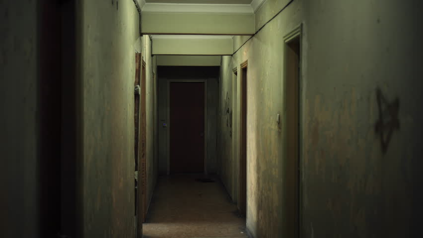

- Back
- Funny
- Home
Apartment
basahin nyo po kahit mahaba kasi totoo po na ngyarr to hindi po gawa gawa lang.. thanks base on my expirience.. bago umuwi ung pinsan ko galing jpan inutusan nya ko mag hanap ng apartment. nkahanp nmn ako bago sya mkauwi.. malaki ung apartmen para saming apat.. ako ung isang pinsan kong babae at un pinsan ko na nag phnap ng apartment na galing japan ksama ung bf nya kya apat kami.. lumipas ang mga araw na my pinkita samin ung may ari ng apartment na isang pwesto na dati daw yun STUDIO.. i mean studio pinag ppraktisan ng mga banda.. kaso hindi daw nag click.. mukhang mtagal ng hndi ngamit ung place na un pero dun din mismo sa aprtment na un mag kadikit lang.. sobrang kapal ng alikabok as in.. so nagustuha nmn ng pinsan ko at ginwa nyang maliit na resto un at nilagyan ng videoke at nga sound system matagal pa bago nag operate un dhil kinuhaan pa ng bussiness permit.. lumipas ang mga bwan kailanga ng bumalik ni ate sa japan.. so sa madaling salita kmi nlang maiiwan don.. pero ang ngyare dun kami umuwi ng isang pinsan ko na babae sa isa pang apartment medyo malayo don sa apartment na un .. kaya ung bf lang ni ate ang andun.. isang araw galing aq sa isang seminar so dhil my susi aq nung bahay dun aq dumertcho.. wala don c "kuya" ( bf ni ate) nag open aq ng computer actualy dlwa ang computer sabi ni kuya tig isa daw kami.. so gnmit ko ung sabi nya sakin daw un at un ng ggmitin ko.. so nag open na sya.. na bgla nlang my nramdaman ako something weird. parang nag slowmo ang pligid ko.. at npatingin aq sa CPU ng isang PC na nsa tabi ko lang.. nadinig ko na my tumunog na nag click.. ung tunog ng botton sa CPU pag ioopen.. kinilabutan buong ktwan ko.. ung buhok ka sa ulo parang umaangat.. hindi ko pa agad naisip na minulto ako.. after ilang seconds pa bago ko na realize.. so pumikit ako at nag dasal.. ginawa ko umalis na ako sa apartment at wala akong pinag kwentuhan about don dhil alam ko n hndi cla maniniwala.. lumipas uli ang mga months na drating uli c ate from japan.. so nag pprepared kami that time.. kailangan nmin mamili para don sa restobar para bago dumating c ate my mga gamit na.. naalala ko bigla na naiwanan ko ung wallet ko doon sa isang apartment kung saan my nag multo sakin.. pinuntahan ko ung aprtment para mkuha ko ung wallet ko.. nkarating na ko sa apartment kumatok ako hindi nag bubukas c kuya .. naisip ko baka tulog pa dahil nag inuman kami nung gabi baka napuyat or my hang over.. so sumisigaw aq sa labas wla parin.. kinatok ko uli ung pinto at kinlampag at pinihit pihit ko ung door knob na wala prin.. hndi ko mbuksan ung pinto dahil ung duplicate na hawak kong susi andon sa loob ng wallet na naiwanan ko sa loob.. so sa madaling salita nka dalawang beses na kong katok ng katok.. nag magndang loob ung tao don sa hardware katabi ng apartment na inupahan nmin.. sabi nya.. my landline kayo db tawagan mo para magcing anjan yan si kuya mo kc anjan ung motor ee.. so tinawagan ko nman.. ang lakas ng ring nung phone dinig sa labas pero wala prin talaga.. pangatlong katok ko na kinalampag ko rin at sabay sigaw sa pangalan ni kuya.. pero that time pag pihit ko sa door knob bukas na sya.. so buong akala ko pinag buksan na ko ni kuya ng pinto.. sa sobrang pag mmdali ko .. umakyat na ko agad sa kwarto habang sinasabi ko na " kuya grabe ka matulog ang tgal mong gcngin.." sumilip aq sa kwarto nya kc bukas ung pinto naisip ko bka nsa cr sya kya hndi sya sumagot nung kinausap ko.. so bumaba na ko para tgnan sya sa CR wala din sya don.. sinilip ko din sa dirty kitchen wala rin sya.. para nnman nag slowmo ung paligid ko .. hawak ko na ung wallet ko kya lumabas na ko ng bahay ng walang imik.. nag papaisip aq habang nag lalakad.. naalala ko sabi nga pala ni kuya na aalis sya ng maaga ppunta sya ng makati at hindi nya ddalin ang motor nya. lalu akong nagtaka.. nkkapag taka talaga dhil ilang beses kong pinihit pihit ung door knob pero nka lock.. impusible na masira ko un dahil nung pangatlong beses na pihitin ko hndi na sya nkalock.. natakot na ko at knwento ko na may gnun nga kong expirience sa bahay na un.. sa madaling salita my nag bubukas tlga ng pinto.. hindi pa natapos don ung creepy moment.. dumating na si ate from japan.. madlas sya mang gising ng maagang maaga so hindi ko hnhayaan na hndi nka lock ung pinto ng kwarto dun din sa aprtment na yun .. umaga na nga at eto na si ate ng gigising na.. ksama ko sa kwarto ung bestfriend ko at ung isang babaeng kaibigan ni ate sa iisang kwarto.. unang katok ni ate hndi nmn nya nbuksan ung pinto.. pangalwang katok nya sarado prin at hndi ko binubuksa dahil ang aga pa 6am plang.. narinig kong umakyat sya uli at nagulat ako na nabuksan na nya ung pinto eh nka doble lock un .. nka lock sa door knob at dun sa de-kawit na lock sa loob.. so tinanong ko ung bestfriend ko.. "marce binuksa mo ba ung pinto" sumagot sya.. hindi ahh hndi pa nga aq tumatayo.. nagka tinginan kmi at.. nasabi ko nlang na.. AYAN NANAMAN SYA.. NAG BUKAS NNMAN SYA NG PINTO ..